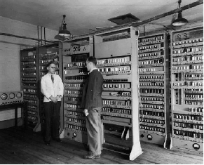

|  |
O projeto EDSAC foi iniciado em 1946 pela Universidade de Cambridge sob a liderança de Maurice Wilkes. A construção foi concluída em 1949, pouco depois do EDVAC, que foi um dos primeiros computadores a implementar a arquitetura de von Neumann. A memória do EDSAC era baseada em colunas de mercúrio, similar à do EDVAC. Inicialmente, o EDSAC tinha 512 posições de memória, mas essa capacidade foi posteriormente expandida para 1.024 posições. Cada posição armazenava uma palavra de 18 bits, com 1 bit não utilizado devido a restrições de sincronização da memória. O EDSAC operava com números de uma palavra (17 bits) e números de palavra dupla (34 bits). As instruções do EDSAC tinham 5 bits e eram projetadas para corresponder a letras mnemônicas. Por exemplo, o código para a instrução ADD era representado pela letra A. Cada instrução era composta por 5 bits para a operação e 10 bits para indicar o endereço de memória do operando. Um bit adicional era usado para identificar se o operando era um número de palavra simples ou dupla. O uso de letras mnemônicas no EDSAC para representar instruções deu origem ao que hoje conhecemos como Linguagem Assembly. Essa linguagem de programação de baixo nível é projetada para ser mais intuitiva do que os códigos binários puros. Cada comando é representado por uma letra ou abreviação que facilita a memorização e escrita de programas. |